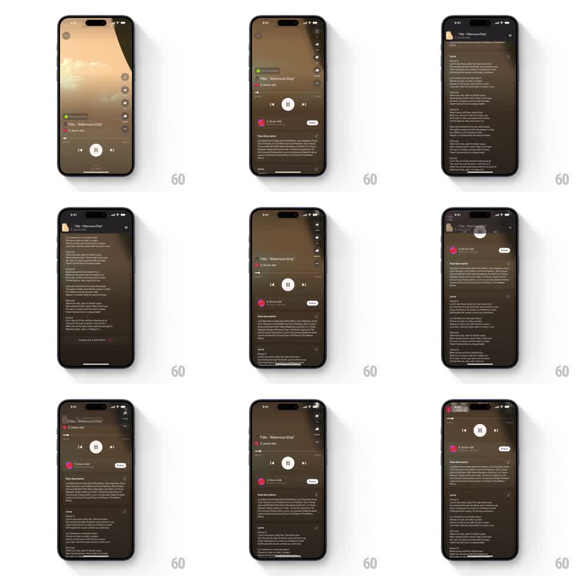

Media
Frame-by-frame

Rebuild this interaction 1:1: Suno's lyrics scroll - as the user scrolls down past the main player, a compact mini player drops from the top header; scrolling back up slides it away as the main player returns.

Rebuild this interaction 1:1: Suno's lyrics scroll - as the user scrolls down past the main player, a compact mini player drops from the top header; scrolling back up slides it away as the main player returns. ## Integration Integration: stack-agnostic spec - springs given as stiffness/damping, timed motions as duration + curve; map every value to your framework and animation library of choice. ## Scene A dark song page: header, large artwork, title "Afternoon Drip" with artist, transport controls (prev / play-pause / next), style description, then the full lyrics body scrolling beneath. The mini player is a slim bar pinned under the top header: artwork thumbnail, title and artist, and a circular pause button. ## Motion spec Pattern: scroll-triggered sticky mini player dropping from the header. - The page scrolls normally; the main player (artwork + transport) moves up with the content. - When the main transport controls scroll fully under the header, the mini player drops in from above (spring ~340/26, ~60pt travel, 250ms) and stays pinned. - The mini player's pause button mirrors playback state and toggles it (icon swap with a 150ms scale pop). - Scrolling back up: once the main player re-enters view, the mini player slides back up and out (250ms, ease-in) while the main controls scroll back into place. - The threshold is positional, not velocity-based: the mini player appears exactly when the main controls leave the viewport. ## Calibration - One player is always visible: the handoff happens at the exact crossover, no gap, no overlap of both full controls. - The mini player casts a thin bottom divider/shadow so lyrics passing under it read clearly. ## Reduced motion Mini player fades in/out (150ms) instead of sliding. ## Don't miss - The mini player inherits the page's dark blurred background, not an opaque bar. - The title in the mini player matches the main player's title exactly, thumbnail included.